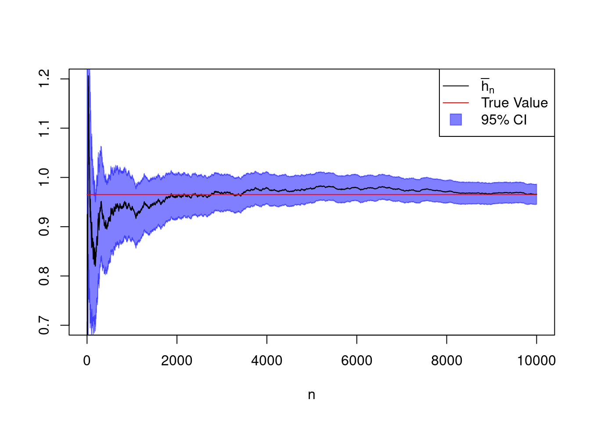

## install.packages("mosaicCalc")
suppressPackageStartupMessages(library("mosaicCalc"))
## Symbolic (= analytic) integration
F <- antiD( (cos(50*x)+sin(20*x))^2 ~ x)
F(1) - F(0)[1] 0.9652009In principle, it is sufficient to read this script, but I can recommend the following books for further self-studies:
Monte Carlo methods take advantage of the availability of:
Terminology:
This chapter is about Monte Carlo Integration which is a stochastic alternative to deterministic numerical integration methods such as numerical quadrature.
Figure 2.1 shows a screenshot of a published example (see Bourreau, Sun, and Verboven (2021)), where the authors use Monte Carlo simulation to solve a hard-to-compute integral.

The generic problem here is the evaluation of integrals. For instance, \[ \mathbb{E}_{f_{X}}\left(h(X)\right)=\mathbb{E}\left(h(X)\right)=\int_\mathcal{X}h(x)\,f_X(x)\,dx, \tag{2.1}\] where \(\mathcal{X}\) denotes the domain of the random variable \(X\in\mathcal{X}\subseteq\mathbb{R}^d,\) and where \(h\) is some transformation function, e.g., \[ h(x)=x^2,\;\;h(x)=\ln(x),\;\;h(x)=x,\;\;\text{etc.} \]
Computing means means computing integrals. To stress that one computes the integral with respect to the distribution characterized by the density function \(f_X,\) one can write \[ \mathbb{E}_{f_{X}}\left(h(X)\right) \] instead of \[ \mathbb{E}\left(h(X)\right). \] We will use this notation more often below.
Often, analytical solutions for integrals such as in Equation 2.1 are not readily available and one needs to use some numerical approaches/computational. Given our previous developments, it is kind of natural to propose using a realization \[ x_1,\dots,x_n \] from a (pseudo) random sample \[ X_1,\dots,X_n\overset{\text{i.i.d.}}{\sim}f_X \] to approximate the integral in Equation 2.1 using the empirical mean \[ \mathbb{E}\left(h(X)\right)\approx\bar{h}_n=\frac{1}{n}\sum_{i=1}^n h(x_i). \] By the Strong Law of Large Numbers (SLLN) we know that the empirical mean \(\bar{h}_n\) converges almost surely (a.s.), and thus also “in probabiliuty” to the desired limit \(\mathbb{E}\left(h(X)\right)\) as the sample size \(n\) becomes large, i.e., as \(n\to\infty\). Prerequisites for the SLLN:
As we can use the computer to produce realizations from the i.i.d. sample \(X_1,\dots,X_n\), we can in principle choose an arbitrary large sample size \(n\) such that \(\bar{h}_n\) can, in principle, be arbitrarily close to the desired limit \(\mathbb{E}\left(h(X)\right)\).
Though, …
OK, we know now that \(\bar{h}_n\) reaches its limit (here in the “almost surely” sense, but likewise in the “in probability” case) as \(n\to\infty\) under some rather loose conditions on the random sample \(X_1,\dots,X_n\).
If we are willing to additionally assume that \(h(X)\) has finite second moments, i.e. \[ \mathbb{E}(h(X)^2)<\infty, \] then we can additionally say something about how fast \[ \bar{h}_n=\frac{1}{n}\sum_{i=1}^n h(X_i)\to_{p} \mathbb{E}(h(X)). \]
The speed of convergence of the stochastic sequence \[ \{\bar{h}_n\}_{n=1,2,\dots}= \bar{h}_1,\;\bar{h}_2,\;\;\bar{h}_3,\;\dots \] to its limit \(\mathbb{E}(h(X))\) can be quantified by the rate at which the standard error \[ \operatorname{SE}\left(\bar{h}_n\right)=\sqrt{\mathbb{V}\left(\bar{h}_n\right)} \] converges to zero as \(n\to\infty\).
We think of \(\{\bar{h}_n\}_{n=1,2,\dots}\) as the sequence of random variables
\[
\bar{h}_n=\frac{1}{n}\sum_{i=1}^n h({\color{red}{X_{i}}})
\] with \({\color{red}{X_1}},\dots,{\color{red}{X_n}}\overset{\text{i.i.d.}}{\sim}f_X.\)
Note that assuming finite second moments \(\mathbb{E}(h(X)^2)<\infty\) is equivalent to assuming finite variance \(\mathbb{V}\left(h(X)\right)<\infty,\) since \[ \mathbb{V}\left(h(X)\right) = \mathbb{E}(h(X)^2) - \left(\mathbb{E}(h(X))\right)^2, \] and since if higher moments, like \(\mathbb{E}(h(X)^2),\) are finite, also the lower moments, like \(\mathbb{E}(h(X)),\) are finite.
The standard error of \(\bar{h}_n\) is just the square root of the variance of \(\bar{h}_n.\) The variance of \(\bar{h}_n\) is given by \[
\begin{align*}
\mathbb{V}\left(\bar{h}_n\right)
&=\mathbb{V}\left(\frac{1}{n}\sum_{i=1}^n h(X_i)\right) \\[2ex]
&=\frac{1}{n^2}\mathbb{V}\left(\sum_{i=1}^n h(X_i)\right) \\[2ex]
&=\frac{n}{n^2}\mathbb{V}\left(h(X_1)\right)\quad \text{(since i.i.d.)} \\[2ex]
&=\frac{1}{n} \mathbb{V}\left(h(X_1)\right)
\end{align*}
\] The square root of \(\mathbb{V}\left(h(X_1)\right)\) equals some finite, positive constant \(0<\mathtt{const}<\infty\),
\[
\mathtt{const}=\sqrt{\mathbb{V}\left(h(X_1)\right)}
\] such that \[
\sqrt{\mathbb{V}\left(\bar{h}_n\right)}=n^{-1/2}\mathtt{const}%\propto n^{-1/2}.
\] I.e., the speed of convergence (or rate) of the stochastic sequence \(\{\bar{h}_n\}\) is proportional to the deterministic sequence \(\{n^{-1/2}\}.\)
Even if we would not know the value of \(\mathtt{const}=\sqrt{\mathbb{V}\left(h(X)\right)},\) we know now that the improvement from \(n=10\) to \(n=100\) will be much higher than from \(n=110\) to \(n=200\). In practice, a typical choice is \(n=10,000;\) for moderate standard errors this choice will guarantee a very good approximation.
Besides the speed of convergence of \(\{\bar{h}_n\}_{n=1,2,\dots}\) for \(n\to\infty,\) we can also say something about the distribution of the random variable \(\bar{h}_n\) for large sample sizes \(n.\)
We can estimate the variance of the estimator \(\mathbb{V}\left(\bar{h}_n\right)\) by its empirical version \[ v_n^2=\frac{1}{n}\sum_{i=1}^n\left(h(x_i)-\bar{h}_n\right)^2, \] where by the SLLN, which also implies convergence in probability, \[ v_n^2\to_{p}\mathbb{V}\left(h(X)\right),\quad n\to\infty. \] Then, by the Continuous Mapping Theorem (CMT), the Central Limit Theorem (CLT), and Slutsky’s theorem, we have that \[ \sqrt{n}\left(\frac{\bar{h}_n - \mathbb{E}\left(h(X)\right)}{v_n}\right)\to_d \mathcal{N}(0,1),\quad n\to\infty. \]
The above result can now be used for the construction of (asymptotically valid) convergence tests and confidence intervals with respect to \(\bar{h}_n\), since for large \(n\) \[ \bar{h}_n\,\overset{d}{\approx}\mathcal{N}\left(\mathbb{E}\left(h(X)\right),\frac{\mathbb{V}\left(h(X)\right)}{n}\right). \]
Since we can use the computer to generate realizations of the i.i.d. sample \(X_1,\dots,X_n\overset{\text{i.i.d.}}{\sim}X\) with \(X\sim f_X,\) we can easily approximate the mean \[ \mathbb{E}\left(h(X)\right)\approx \bar{h}_n \] and the variance \[ \mathbb{V}\left(h(X)\right)\approx v_n^2 \] with arbitrary accuracy as \(n\to\infty\) (justification: strong/weak law of large numbers).
Example 2.1 (A first Monte Carlo Integration) Let’s say we want to compute the integral \[ \int_0^1h(x)dx \] with \[ h(x)=\left(\cos(50\,x)+\sin(20\,x)\right)^2 \] over \(x\in[0,1].\) Although this integral could also be computed analytically, it is a good first test case. The following code computes the analytic result that \(\int_0^1h(x)dx = 0.9652009.\)
## install.packages("mosaicCalc")
suppressPackageStartupMessages(library("mosaicCalc"))
## Symbolic (= analytic) integration
F <- antiD( (cos(50*x)+sin(20*x))^2 ~ x)
F(1) - F(0)[1] 0.9652009Figure 2.2 shows the graph of the function \(h\).
h_fun <- function(x){
result <- (cos(50*x)+sin(20*x))^2
return(result)
}
xx <- seq(from=0, to=1, len=500)
plot(x = xx,
y = h_fun(xx),
type="l",
main="Function h",
xlab="x", ylab="h(x)")
To approximate the integral \[ \int_0^1 h(x)dx \] using Monte Carlo integration, we can use that \[ \begin{align*} \int_0^1 h(x)dx &=\int_0^11\cdot h(x)dx \\[2ex] &=\int_0^1f_{\mathcal{U}\text{[0,1]}}(x)\cdot h(x)dx \\[2ex] &= \mathbb{E}_{f_{\mathcal{U}\text{[0,1]}}}(h(X)), \end{align*} \] where \(f_{\mathcal{U}\text{[0,1]}}\) denotes the density function of the standard uniform distribution \(\mathcal{U}\text{[0,1]}.\)
Thus, to compute \(\int_0^1 h(x)dx\) we generate a realization \((u_1,\dots,u_n)\) from the random sample \(U_1,\dots,U_n\sim \mathcal{U}[0,1]\) and approximate \[ \int_0^1 h(x)dx\approx \bar{h}_n=\frac{1}{n}\sum_{i=1}^n h(u_i). \]
In order to assess how good this approximation is, we need to consider the stochastic properties of the random variable \[ \bar{h}_n = \frac{1}{n}\sum_{i=1}^n h(U_i). \] This is done using the above (review of) results on the limit distribution of the sample mean \(\bar{h}_n\) which allows us to construct an approximate \(95\%\) confidence interval, since for large \(n\) \[ \begin{align*} \operatorname{CI}^{95\%}_n =&\left[\bar{h}_n - z_{1-\alpha/2}\sqrt{\frac{v_n^2}{n}}, \bar{h}_n + z_{1-\alpha/2}\sqrt{\frac{v_n^2}{n}}\right]\\[2ex] \approx& \left[\bar{h}_n - z_{1-\alpha/2} \sqrt{\frac{\mathbb{V}(h(U_i))}{n}}, \bar{h}_n + z_{1-\alpha/2} \sqrt{\frac{\mathbb{V}(h(U_i))}{n}}\right], \end{align*} \] where \(z_{1-\alpha/2}\approx 1.96\) denotes the \((1-\alpha/2)\)-quantile of \(\mathcal{N}(0,1),\) \(v_n^2=n^{-1}\sum_{i=1}^n(h(u_i)-\bar{h}_n)^2,\) and where \[ P\left(\int_0^1 h(x)dx \in \operatorname{CI}^{95\%}_n \right) \to 0.95,\quad n \to\infty, \] by the CLT.
Figure 2.3 shows one realization of the stochastic sequence \[ \bar{h}_1,\dots,\bar{h}_n \] with \(n=10000\), where the realized value of \(\bar{h}_n\) is \(0.966\). This compares favorably with the with the exact value of \(\int_0^1h(x)dx = 0.9652009.\)
library("scales")
# h(x):
h_fun <- function(x){
result <- (cos(50*x)+sin(20*x))^2
return(result)
}
# sample size
n <- 10000
# Generate sample of uniforms
set.seed(321)
u_vec <- runif(n=n)
# Approximation of the integral
h_bar_n <- cumsum(h_fun(u_vec))/c(1:n)
# True value:
true.value <- 0.9652009
# 95% CI
# Standard error of the estimator using the "algebraic
# formula" for the variance (german: 'verschiebungssatz')
st.error_n <- sqrt((cumsum(h_fun(u_vec)^2)/(1:n) -
cumsum(h_fun(u_vec))^2/(1:n)^2))
CI_u <- h_bar_n + 1.96 * st.error_n / sqrt(1:n)
CI_l <- h_bar_n - 1.96 * st.error_n / sqrt(1:n)
plot(x = c(1:n), y = h_bar_n, type="n",
ylim=c(0.7,1.2),
xlab = "n",
ylab = "")
polygon(x = c(1:n, rev(1:n)),
y = c(CI_u, rev(CI_l)),
col = alpha("blue", 0.5),
border = alpha("blue", 0.5))
lines(x = c(1:n),
y = h_bar_n, type="l")
lines(x = c(1:n),
y = rep(true.value, n), type="l", col="red")
##
legend("topright",
legend = c(expression(bar(h)[n]),
"True Value", "95% CI"),
lty = c(1,1,0), pch=c(22,22,22), pt.cex=c(0,0,2),
pt.bg = c("black", "red", alpha("blue", 0.5)),
col = c("black", "red", alpha("blue", 0.5)))
The approach of Example 2.1 can be successfully utilized in many cases, even though it is often possible to achieve greater efficiency/accuracy through numerical methods (e.g., Riemann Sum, Trapezoidal Rule, Simpson’s Rule, etc.) in dimensions 1 or 2; see the following code example:
numericalIntegration <- integrate(f = h_fun,
lower = 0,
upper = 1)
numericalIntegration0.9652009 with absolute error < 1.9e-10However, the Monte Carlo integration approach is particularly useful for approximating integrals over higher dimensional sets \(\mathcal{X}\subseteq\mathbb{R}^d.\)
Example 2.2 (Approximation of Normal Distribution Tables) A possible way to construct normal distribution tables, i.e., table for the values of the distribution function \(0\leq \Phi(x)\leq 1,\) is to use Monte Carlo integration. Besides this specific use case, this example showcases the treatment of integrals that can be approximated using propoartions \[ \hat{p} =\frac{\text{Number of successes}}{\text{Sample size}}, \] where we choose the sample size \(n\) to achieve a certain level of precision for our integral approximation.
Observe that the distribution function \(\Phi(x)\) can be written as the mean of a binary (taking values 0 and 1) random variable, \[ \begin{align*} \Phi(x) &=\int_{-\infty}^x\frac{1}{\sqrt{2\pi}}e^{-y^2/2}dy\\[2ex] &=P\left(X \leq x\right)\\[2ex] &=P\left(1_{(X \leq x)} = 1\right)\\[2ex] &=P\left(1_{(X \leq x)} = 1\right)\cdot 1 + P\left(1_{(X \leq x)} = 0\right)\cdot 0\\[2ex] &=\mathbb{E}\left(1_{(X \leq x)}\right), \end{align*} \] where \(X\sim\mathcal{N}(0,1),\) and where \(1_{(\texttt{TRUE})}=1\) and \(1_{(\texttt{FALSE})}=0.\)
That is, we can write the integration problem as the mean of a Bernoulli random variable \[ 1_{(X \leq x)}\in\{0,1\} \] \[ 1_{(X \leq x)}\sim\mathcal{Bern}\left(p=\Phi(x)\right), \] with parameter \[ p=P\left(X \leq x\right) = \Phi(x). \]
Note that \(1_{(X \leq x)}\) is a Bernoulli random variable no matter the distribution of \(X.\) Here \(X\) is a standard normal random variable; however, in other use cases \(X\) can have, of course, another distribution, but \(1_{(X \leq x)}\) remains a Bernoulli random variable. We use this feature below when we think about the distributional properties of our estimator for approximating the integral value.
Monte Carlo integration, allows us to approximate the integral \(\Phi(x)\) using the empirical mean \[ \hat{p}_n(x)=\frac{1}{n}\sum_{i=1}^n 1_{(X_i\leq x)} \] with \[ X_1,\dots,X_n\overset{\text{i.i.d.}}{\sim}\mathcal{N}(0,1), \] and \[ \hat{p}_n(x)\in[0,1] \] for all \(x\in\mathbb{R},\) and all “sample sizes” (chosen by us) \(n=1,2,\dots\)
Now, to assess the accuracy of our Monte Carlo integration for approximating \(\Phi_n(x),\) we need to derive the distributional properties of our estimator \(\hat{p}_n(x).\)
For this we consider, firstly, the transformed random variable \[ n \hat{p}_n(x)=\sum_{i=1}^n1_{(X_i\leq x)}, \] which is just the sum of independent Bernoulli distributed random variables with success probability \(p=\Phi(x),\) \[ 1_{(X_1\leq x)},\dots,1_{(X_n\leq x)}\overset{\text{i.i.d.}}{\sim} \mathcal{Bern}\left(p=\Phi(x)\right) \] Thus, the transformed random variable \[ n\hat{p}_n(x)=\sum_{i=1}^n1_{(X_i\leq x)} \] is binomial distributed with parameters \(n\) and \(p=\Phi(x),\) \[ n \hat{p}_n(x)\sim \mathcal{Binom}\left(n, p=\Phi(x)\right). \] Thus, we know the exact variance which is \[ \begin{align*} \mathbb{V}\left(n\hat{p}_n(x)\right)&=\Phi(x)(1-\Phi(x)). %\Leftrightarrow \mathbb{V}\left(\hat{p}_n(t)\right) &=\frac{\Phi(x)(1-\Phi(x))}{n} \end{align*} \] The standard error for our estimator \(\hat{p}_n(x)\) thus is equal to \[ \begin{align*} \operatorname{SE}\left(\hat{p}_n(x)\right) &=\sqrt{\frac{\Phi(x)(1-\Phi(x))}{n}}\\[2ex] &=\texttt{const}\cdot \frac{1}{\sqrt{n}} \end{align*} \] That is, the Monte Carlo integration algorithm has the typical parametric convergence rate of \[ \frac{1}{\sqrt{n}}. \]
Table 2.1 gives the evolution of the Monte Carlo integration results \[ \hat{p}_n(x)\approx \Phi(x) \] for several values of \(x\) and \(n.\) Very accurate approximations are achieved for \(n=10^8.\)
| \(n\) | \(x=0.0\) | \(x=0.84\) | \(x=3.72\) |
|---|---|---|---|
| \(10^2\) | \(0.4850\) | \(0.7700\) | \(1.0000\) |
| \(10^3\) | \(0.4925\) | \(0.8010\) | \(1.0000\) |
| \(10^4\) | \(0.4962\) | \(0.7941\) | \(0.9999\) |
| \(10^5\) | \(0.4995\) | \(0.7993\) | \(0.9999\) |
| \(10^6\) | \(0.5001\) | \(0.8000\) | \(0.9999\) |
| \(10^7\) | \({\color{red}0.5002}\) | \(0.8000\) | \(0.9999\) |
| \(10^8\) | \(0.5000\) | \(0.8000\) | \(0.9999\) |
Note that greater accuracy is achieved in the tails.
As an additional tool for showing the accuracy of our Monte Carlo integration, we can report confidence intervals.
For large \(n,\) we have by the CLT that \[ \begin{align*} \frac{\hat{p}_n(x) - \Phi(x)}{\operatorname{SE}\left(\hat{p}_n(x)\right)} \overset{d}{\approx}\mathcal{N}(0,1). \end{align*} \tag{2.2}\] Thus, for large \(n,\) we can provide an approximate confidence interval \[ \begin{align*} \operatorname{CI}^{95\%}_n\left(\Phi(x)\right) =&\left[ \hat{p}_n(x) \pm z_{1-\alpha/2}\operatorname{SE}\left(\hat{p}_n(x)\right) \right]. \end{align*} \tag{2.3}\] This confidence interval is an approximate one, since the quantile \(z_{1-\alpha/2}\) uses the approximate asymptotic \(\mathcal{N}(0,1)\) distribution in Equation 2.2. To make the confidence interval in Equation 2.3 usable in practice, we need to plug-in an estimate for the unknown \(\operatorname{SE}\left(\hat{p}_n(x)\right),\) \[ \widehat{\operatorname{SE}}\left(\hat{p}_n(x)\right) = \sqrt{\frac{\hat{p}_n(x)(1-\hat{p}_n(x))}{n}}. \]
However, it turns out that going the indirect way via the central limit theorem to derive a confidence interval is not optimal here. A more efficient confidence interval for proportions is, for instance, the Clopper-Pearson confidence interval (Clopper and Pearson (1934)).
The following code snippet computes the 99% Clopper-Pearson confidence interval for the red marked Monte Carlo integration result, \(\hat{p}_n(0)=0.5002,\) in Table 2.1.
## install.packages("PropCIs")
library("PropCIs")
## Clopper-Pearson confidence interval
n <- 10e7 # "sample" size (chosen by use)
x <- 0.5002 * n # observed value of n * \hat{p}_n(x)
CI <- exactci(x = x,
n = n,
conf.level = 0.99)
## Lower and upper CI-border
c(CI$conf.int[1], CI$conf.int[2]) [1] 0.5001089 0.5002911That is, we need a sample size of \(n^7\) to achieve a precision of three decimal places by means of a 99% Clopper-Pearson confidence interval.
As demonstrated in Example 2.2, the accuracy of the Monte Carlo integration method as a tool for approximating integral values depends on the variance of the estimate that approximates the integral value.
“Importance sampling” aims to reduce the variance of the Monte Carlo integral estimator. Therefore, importance sampling is also refereed to as a variance reduction technique. This variance reduction is achieved by weighting functions, so-called importance functions.
As in the case of Monte Carlo integration the focus lies on evaluating the integral \[ \mathbb{E}_{f_X}(h(X))=\int_\mathcal{X}h(x)f(x)\,dx. \]
However, it turns out that the above approach, i.e., sampling from \(f\) is often suboptimal.
Observe that the value of the above integral can be represented by infinitely many alternative choices of the triplet \[ (\mathcal{X}, h, f_X). \] Therefore, the search for an optimal estimator should encompass all these possible representations.
Let’s illustrate this with a simple example.
Example 2.3 (Cauchy Tail Probability) This example is from Ripley (2009).
Suppose that the quantity of interest is the probability, say \(p\), that a \(\mathcal{Cauchy}(0,1)\)-distributed random variable is larger than \(2\), i.e. \[ p=\int_{2}^{+\infty}\frac{1}{\pi(1+x^2)}\,dx, \tag{2.4}\] where \(1/(\pi(1+x^2))\) is the density function of the \(\mathcal{Cauchy}(0,1)\)-distribution.
This is a nice example. One the one hand, it allows us to showcase possibilities to improve efficiency of Monte Carlo integration. On the other hand, we know already the result of Equation 2.4; namely, \(p=0.1476\)
round(1 - pcauchy(2), 4)[1] 0.14761. Approach: The Naive Approach
The most direct approach would be to use the following mean expression for the integral of interest: \[ \begin{align*} p &=\int_{2}^{+\infty}\frac{1}{\pi(1+x^2)}\,dx\\[2ex] &=P\left(X \leq 2\right)\\[2ex] &=P\left(1_{(X \leq 2)}=1\right)\\[2ex] &= P\left(1_{(X \leq 2)}=1\right)\cdot 1 + P\left(1_{(X \leq 2)}=0\right)\cdot 0\\[2ex] &=\mathbb{E}\left(1_{(X \leq 2)}\right) \end{align*} \]
So, we can approximate \(p\) using the empirical mean \[ \hat{p}_{1}=\frac{1}{n}\sum_{i=1}^n 1_{(X_i>2)} \] of a random sample \(X_1,\dots,X_n\overset{\text{i.i.d.}}{\sim}\mathcal{Cauchy}(0,1),\) where \[ 1_{(X_1>2)},\dots,1_{(X_n>2)}\overset{\text{i.i.d.}}{\sim}\mathcal{Bernoulli}(p). \] The variance of \(\hat{p}_1\) is thus \[ \begin{align*} \mathbb{V}(\hat{p}_{1}) &=\frac{1}{n^2}\mathbb{V}\left(\sum_{i=1}^n1_{(X_i>2)}\right)\\[2ex] &=\frac{n}{n^2}\mathbb{V}\left(1_{(X_1>2)}\right)\quad\text{(i.i.d.)}\\[2ex] &=\frac{p(1-p)}{n}, \end{align*} \] which is equal to \(0.126/n,\) since we know that \(p=0.1476\).
2. Approach: Accounting for Symmetry
In this approach, we use the “adjusting Screws” \(\mathcal{X}\) and \(h.\)
We can achieve a more efficient estimator (i.e., an estimator with lower variance for a given same sample size \(n\)) if we take into account the symmetric nature of \(\mathcal{Cauchy}(0,1).\)
Obviously, due to the symmetry of our target integrand, can do the following rearrangement \[ \begin{align*} p &=\int_{2}^{+\infty}\frac{1}{\pi(1+x^2)}\,dx\\[2ex] &=\frac{1}{2}\left(\int_{-\infty}^{-2}\frac{1}{\pi(1+x^2)}\,dx + \int_{2}^{+\infty}\frac{1}{\pi(1+x^2)}\,dx \right)\\[2ex] &=\frac{1}{2}\left(\mathbb{E}\left(1_{(X \leq -2)}\right) + \mathbb{E}\left(1_{(X \geq 2)}\right)\right)\\[2ex] &=\frac{1}{2} \; \mathbb{E}\left(1_{(|X| \geq 2)}\right) \end{align*} \] This representation has the attractive feature that we can use a much higher fraction of the simulated data by using the following new empirical mean \[ \begin{align*} \hat{p}_{2} %&=\frac{1}{2}\left(\frac{1}{n}\sum_{i=1}^n1_{(X_i \leq -2)}+ \frac{1}{n}\sum_{i=1}^n 1_{(X_i \geq 2)}\right)\\[2ex] &=\frac{1}{2n}\sum_{i=1}^n 1_{(|X_i|\geq 2)} \end{align*} \] again of a random sample \(X_1,\dots,X_n\overset{\text{i.i.d.}}{\sim}\mathcal{Cauchy}(0,1),\) where \[ 1_{(|X_1|>2)},\dots,1_{(|X_n|>2)}\overset{\text{i.i.d.}}{\sim}\mathcal{Bernoulli}(2\,p). \] The variance of this new estimator, \[ \begin{align*} \mathbb{V}(\hat{p}_{2}) &=\frac{1}{4n^2}\mathbb{V}\left(\sum_{i=1}^n1_{(|X_i|\geq 2)}\right)\\[2ex] &=\frac{1}{4n}\mathbb{V}\left(1_{(|X_1|\geq 2)}\right)\\[2ex] &=\frac{2p(1-2p)}{4n}, \end{align*} \] which is equal to \(0.052/n,\) since we know that \(p=0.1476\). This is clearly lower than in the naive approach, where we had \(0.126/n.\)
3. Approach:
In this approach, we use all the “adjusting screws” \(\mathcal{X}\), \(h\), and \(f.\)
The (relative) inefficiency of the above approaches is due to the generation of RVs outside the domain of interest, \([2,+\infty)\), which are in some sense irrelevant for the approximation of \(p\). This motivates the following reformulation of \(p\):
By symmetry of \(f,\) we have that \[ \begin{align*} \frac{1}{2} & =\int_{0}^\infty\frac{1}{\pi(1+x^2)}dx. \end{align*} \] This can be used to do the following: \[ \begin{align*} \frac{1}{2} & =\int_{0}^2\frac{1}{\pi(1+x^2)}dx + \underbrace{\int_{2}^{+\infty}\frac{1}{\pi(1+x^2)}dx}_{=p}\\[2ex] \Leftrightarrow \; p& =\frac{1}{2}-\int_{0}^2\frac{1}{\pi(1+x^2)}dx. \end{align*} \] Furthermore, we can rearrange the integral a bit such that \[ \begin{align*} &\int_{0}^2\;\left(\frac{1}{2}\cdot 2\right)\;\frac{1}{\pi(1+x^2)}\,dx \\[2ex] =&\int_{0}^2\;\underbrace{\frac{1}{2}}_{f_{\mathcal{U}[0,2]}}\;\underbrace{\frac{2}{\pi(1+x^2)}}_{=h(x)}\,dx \\[2ex] =&\mathbb{E}_{f_{\mathcal{U}[0,2]}}(h(U)), \end{align*} \] where \(U\sim\mathcal{U}[0,2].\)
Therefore a new alternative method for evaluating \(p\) is: \[ \hat{p}_{3}=\frac{1}{2} - \frac{1}{n}\sum_{i=1}^n h(U_i), \] where \[ U_1,\dots,U_n\overset{\text{i.i.d.}}{\sim}\mathcal{U}[0,2]. \] Computing the variance is here cumbersome. \[ \begin{align*} \mathbb{V}\left(\hat{p}_{3}\right) & =\frac{1}{n^2}\mathbb{V}\left(\sum_{i=1}^n h(U_i)\right)\\[2ex] & =\frac{1}{n}\mathbb{V}\left(h(U_1)\right)\\[2ex] \end{align*} \] Using integration by parts and that \(p=0.1476\), it can be shown that \[ \mathbb{V}(\hat p_3)=0.029/n, \] which is lower than both previous approaches, where we had that \(\mathbb{V}(\hat{p}_{2})=0.052/n\) and \(\mathbb{V}(\hat{p}_{1})=0.126/n\).
The idea of importance sampling is related to weighted and stratified sampling ideas, when estimating \[ \theta=\mathbb{E}_{f}(h(X))=\int h(x)f(x)dx, \] as already illustrated in Example 2.3.
Some outcomes of \(X\sim f\) may be more important than others in determining \(\theta\) and we wish to select such values more frequently.
For instance, if \(\theta\) denotes the probability of the occurrence of a very rare event, then the only way to estimate \(\theta\) at all accurately may be to produce the rare events more frequently.
To achieve this, we can simulate a model which gives a density \(g\) to \(X\) instead of the correct density \(f,\) where both density functions need to be known. This can be easily done, since \[ \begin{align*} \theta &=\mathbb{E}_{f}(h(X))\\[2ex] &=\int h(x)\left(\frac{g(x)}{g(x)}\right)\;f(x)dx\\[2ex] &=\int \underbrace{\left(h(x)\frac{f(x)}{g(x)}\right)}_{=:\psi(x)}\;g(x)dx\\[2ex] &=\int \psi(x)\;g(x)dx\\[2ex] &=\mathbb{E}_g(\psi(X)). \end{align*} \]
This leads to the following unbiased estimator for \(\theta\) based on sampling from \(g\): \[ \begin{align*} \hat{\theta}_g &=\frac{1}{n}\sum_{i=1}^n\psi(X_i) \\[2ex] &=\frac{1}{n}\sum_{i=1}^n\underbrace{\left(\frac{f(X_i)}{g(X_i)}\right)}_{=:W_i} h(X_i) \end{align*} \tag{2.5}\] with \[ X_1,\dots,X_n\overset{\text{i.i.d.}}{\sim} g. \]
Note that Equation 2.5 can be seen as a weighted mean of the transformed random variables \(h(X_i)\) with weights \[ W_i = \frac{f(X_i)}{g(X_i)} \] that are inversely proportional to the so-called selection factor \[ \frac{g(X_i)}{f(X_i)}. \]
For the variance of the estimator \(\hat{\theta}_g\) we have \[ \begin{align*} \mathbb{V}_g(\hat{\theta}_g) &=\mathbb{V}_g\left(\frac{1}{n}\sum_{i=1}^n\psi(X_i)\right) \\[2ex] &=\frac{1}{n}\mathbb{V}_g(\psi(X_i))\quad\text{(i.i.d)}\\[2ex] &=\frac{1}{n}\int\left(\psi(x)-\theta\right)^2g(x)\;dx\\[2ex] &=\frac{1}{n}\int\left(\frac{h(x)\,f(x)}{g(x)}-\theta\right)^2g(x)\;dx, \end{align*} \] which, depending on the choice of \(g\), can be much smaller (or larger) than the variance of the naive estimator from the classical Monte Carlo Integration using the ordinary (unweighted) empirical mean.
Proof of Theorem 2.1:
Note that \[ \begin{align*} \mathbb{V}_g(\psi(X_i)) &=\quad\quad \mathbb{E}_g(\psi(X_i)^2)\quad\quad - \quad\quad \left(\mathbb{E}_g(\psi(X_i))\right)^2\\[2ex] &=\int\left(\frac{h(x)f(x)}{g(x)}\right)^2g(x)dx - \left(\int\frac{h(x)f(x)}{g(x)}g(x)dx\right)^2\\[2ex] &=\int\left(\frac{h(x)f(x)}{g(x)}\right)^2g(x)dx - \left(\int h(x)f(x)dx\right)^2. \end{align*} \] Thus, \(\left(\mathbb{E}_g(\psi(X_i))\right)^2\) does not depend on \(g.\) Consequently, the density \(g\) that minimizizes the variance \(\mathbb{V}_g(\psi(X_i))\) is also the density \(g\) that minimizes \(\mathbb{E}_g(\psi(X_i)^2).\) We use this in the following since minimizing \(\mathbb{E}_g(\psi(X_i)^2)\) is simpler than minimizing \(\mathbb{V}_g(\psi(X_i)).\)
We begin with a small trick by including an absolute value function as following: \[ \begin{align*} \mathbb{E}_g(\psi(X_i)^2) &=\mathbb{E}_g({\color{red}|}\psi(X_i){\color{red}|}^2). \end{align*} \]
Jensen’s Inequality: Let \(u\) be a “convex function” such as, for instance, \(u(x)=x^2,\) and let \(X\) be some random variable. Then, \[ \mathbb{E}\left(u(X)\right) \geq u\left(\mathbb{E}\left(X\right)\right), \] where we assume that the moments exist.
Applying Jensen’s inequality yields, the following lower bound for \(\mathbb{E}_g(\psi(X_i)^2):\) \[ \begin{align*} \mathbb{E}_g(\psi(X_i)^2) &=\mathbb{E}_g({\color{red}|}\psi(X_i){\color{red}|}^2)\\[2ex] &\geq \left(\mathbb{E}_g({\color{red}|}\psi(X_i){\color{red}|})\right)^2\\[2ex] &=\left(\int\left|\frac{h(x)f(x)}{g(x)}\right|g(x)dx\right)^2\\[2ex] &=\left(\int\frac{\left|h(x)\right|f(x)}{g(x)}g(x)dx\right)^2\quad\text{(since $f$ and $g$ are non-negative)}\\[2ex] &=\underbrace{\left(\int\left|h(x)\right|f(x)dx\right)^2}_{\text{Lower bound of $\mathbb{E}_g(\psi(X_i)^2)$}}, \end{align*} \] where this lower bound is independent of \(g.\)
It is now straight forward to show that this lower bound is achieved if \[ g(x) = g^\ast(x)=\frac{|h(x)|f(x)}{\int |h(z)|f(z)dz}. \] For this, observe that \[ \begin{align*} \mathbb{E}_g(\psi(X_i)^2) & = \int\left(\frac{h(x)f(x)}{g(x)}\right)^2g(x)dx\\[2ex] & = \int\frac{h^2(x)f^2(x)}{g(x)}dx. \end{align*} \] Now, setting \(g(x)=g^\ast(x)=\frac{|h(x)|f(x)}{\int |h(z)|f(z)dz}\) yields \[ \begin{align*} \mathbb{E}_{g^\ast}(\psi(X_i)^2) & = \int\frac{h^2(x)f^2(x)}{|h(x)|f(x)} \left(\int |h(z)|f(z)dz\right) dx\\[2ex] & = \int\frac{\left|h(x)\right|^2f(x)}{|h(x)|} \; \left(\int |h(z)|f(z)dz\right) dx\\ & = \left(\int\left|h(x)\right|f(x) dx\right) \; \left(\int |h(z)|f(z)dz\right) \\[2ex] & = \underbrace{\left(\int\left|h(x)\right|f(x) dx\right)^2}_{\text{Lower bound of $\mathbb{E}_g(\psi(X_i)^2)$}} \end{align*} \] This shows that the lower bound of \(\mathbb{E}_g(\psi(X_i)^2)\) is achieved for \(g(x)=g^\ast(x)=\frac{|h(x)|f(x)}{\int |h(z)|f(z)dz},\) which shows the statement of Theorem 2.1.
Note that Theorem 2.1 may appear as rather impractical, since, for instance, if \(h(x)>0\) then \(g^\ast\) requires us to know \(\theta=\int h(z)f(z)dz,\) which, however, is just the integral of interest!
The minimum variance result of Theorem 2.1 is, however, still useful:
Let’s apply our new insights to the above Example 2.3 on the Cauchy tail probability \(p\).
Example 2.4 (Cauchy Tail Probability (continued)) Above we had:
Therefore \[ \begin{align*} p & =\mathbb{E}_f(h(X)) \\[2ex] & =\int h(x)f(x)dx \\[2ex] & =\int_{2}^{\infty}f(x)dx \\[2ex] & =\int_{2}^{\infty}\underbrace{\frac{f(x)}{g(x)}}_{=\psi(x)}\;g(x)dx \\[2ex] & =\mathbb{E}_g(\psi(X)), \end{align*} \] where the \(h\) function is absorbed by the formulation of the definite integral.
A possibly good (and simple) choice of \(g\) is, e.g., \(g(x)=2/(x^2)\), since this function:

Caution: It is not straight forward to directly sample from \(g\), therefore we need some further steps:
The choice of \(g\) leads to \[ p=\mathbb{E}_g(\psi(X))= \int_{2}^{+\infty}\left(\frac{x^2}{2\,\pi(1+x^2)}\right)\,\frac{2}{x^2}\,dx= \int_{2}^{+\infty}\left(\frac{1}{\pi(1+x^{-2})}\right)\,x^{-2}\,dx. \]
Now we can apply some additional (rather case-specific) re-arrangements:
Integration by substitution (substituting \(u=x^{-1}\)) yields: \[ p=\int_{0}^{1/2}\frac{1}{\pi(1+u^2)}du. \] Again, we can re-arrange the last integral a bit such that \[ p=\int_{0}^{1/2}\underbrace{2}_{f_{\mathrm{Unif}[0,1/2]}}\;\underbrace{\frac{1}{2\,\pi(1+u^2)}}_{=h(u)}\,du=\mathbb{E}(h(U)),\quad\text{where}\quad U\sim\mathrm{Unif}[0,1/2]. \] Therefore, we have a final fourth version of the estimator of \(p\): \[ \hat{p}_4=\sum_{i=1}n h(U_i),\quad\text{where}\quad U\sim\mathrm{Unif}[0,1/2] \] and \(h(u)=1/(2\pi(1+u^2))\).
The variance of \(\hat{p}_4\) is \((\mathbb{E}(h(U)^2)-\mathbb{E}(h(U))^2)/n\) and an integration by parts shows that \(\mathbb{V}(\hat{p}_4)=0.95\cdot 10^{-4}/n\). Compare this to the former results: \(\mathbb{V}(\hat p_3)=0.0285/n\), \(\mathbb{V}(\hat{p}_{2})=0.0525/n\) and \(\mathbb{V}(\hat{p}_{1})=0.1275/n\). The variance of \(\hat{p}_4\) is by a factor of \(10^{-3}\) lower than the variance of the original \(\hat{p}_1\).